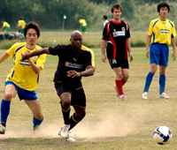
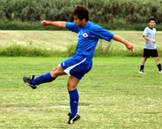

|
|
Pink Panther Ben Cordier recieves a pass from Andy Vaughan through the dust
|
Panthers Purr as Swiss Watches
Sagamisansen, Saturday 26th September
The players of both teams got an insight into the minds of their wives or girlfriends last Saturday upon arrival at Ebina as they were greeted by a dusty, balding pitch in need of some face paint.
TML players expect it all these days, flash cars, pop star girlfriends, onigiris and lined pitches. The Swiss literally laid down a marker by putting the Panthers to shame in the pitch marking stakes.
Would this pre-match impressive form prove to be an important psychological edge in the match itself? more ...
BC
|  |
|
Puma Striker George races after a through ball with Clash's Kazz giving chase.
|
First Point for Pumas
Misato, Sunday 27th September
Division 3 Newbies got their first point point of the season in a 1-1 draw with Robert Walters Clash, despite their best efforts to give it away. Luckily Clash were having none of it, also doing their very best not to win, as chances went begging.
One would have thought 10:00am on a Sunday was the perfect time to get your football fix, meaning you could be back in town in the early afternoon to grab a Roast lunch & a few pints.
Not so for some night owls, who turn up a minute to kick-off then whinge like hell because they are left as one of the 4 players on the bench. more ...
BS
Sala Banish Their 1st Match Demons
 |
|
Birthday boy Sam Matthews scores a Hat-trick as Sala beat JETS 5-0.
|
Misato, Saturday 26th September
With a major point to prove after a shocking defeat to the Geckoes, and a burning desire to get their first win, Sala were super fly TNT right from the off in this one. And heeding the words of their Captain, Herr Geisler, they "closed and opened the fist" more frequently and expertly than a..................well, I'll let u finish that off yourselves as it really depends on what kind of videos you watch. Are you more a "Rocky" kind of guy or "Anastasia's Odessey to Uranus"??
Some great passing early on and some nice little triangles in midfield (dainty ones like Kraft make with cream cheese) quickly led to chances for Sam, Stu, Guido and Toby. more ...
ST
King George Give Yabe the Royal Treatment
 |
|
James Bates scored with a speculative punt from halfway ('It was a shot, honest!!')
|
Misato, Sunday 27th September
It was the morning after the night before; players crawled out from their respective homes/rocks/love hotels to converge, once again, on an unsuspecting Misato. The low hanging cloud like a pool of stale smoke over a late-night poker game and a breeze from the north made for ideal conditions to play the beautiful game.
As 11.30am struck, the teams lined up ready to begin the contest. Yabe F.C. wearing white faced King George F.C. in orange. Both teams looked confident, although King George were without the drunken Adam ‘Teenwolf’ McCann and the influential Tomoki ‘Terminator’ Shiota who was called away to the United States of A at the last minute. more ...
BS
Vags Hold on for 2nd Victory
Hachioji Park, Sunday 27th September
The vagabonds made it two wins on the trot/bounce/spin, whatever you prefer, overcoming the Barbarians by 3 goals to 2 at Hachioji koen. Taking to the field in a kit that smelled of cats urine the vagabonds dominated the first half in terms of posession and territory and at times played some splendid link-up football. more ...
WB
Panthers Take Down Embassy
Misato, Saturday 19th September
Panthers continued their strong start to TML 7 with a hard fought victory against BEFC. After watching the late drama between El Diego and Dutch the game kicked off with a fairly strong wind blowing, typical Misato style. The pitch had surprisingly kept in decent shape despite the previous week’s rain. more ...
RB
|  |
|
Sasaki fires home the first goal for JETS
|
Jets climb over Mt. Zion
Misato, Sunday 13th September
Saitama Jets engaged in a well fought, well mannered game versus Division I newcomers, Zion FC. The game started with both teams struggling to fill their starting 11, with Zion starting with only 10 men. The Jets quickly turned to the attack (although most of them probably didn’t realize they were playing against an under-strength team) and had a few chances in the opening 10 minutes. Veteran Sasaki coolly converted a flick-on by newbie Andrew via the Delap like long throw of John “Wildebeest” Rayner. more ...
ET
SPONSOR DISCOUNTS
It has been brought to our attention that some TML members are abusing the system for getting discounts at TML sponsor pubs. If the abuse continues, we may lose our Pub sponsors, then it will be YOU the players who lose out!!
Please make sure that you SHOW YOUR CURRENT TML CARD, BEFORE asking for your bill and if you are with a group of players, ALL PLAYERS should show their cards! This discount offer is exclusive to TML MEMBERS ONLY and excuses of 'I don't have my card with me' won't work! Some of you are still using last seasons card, this will be OK til the end of September, by which time your captain will have your new card for you, then please start using that!
Pubs currently offering TML discounts: Hobgoblin, Legends, What the Dickens, Town Cryer, Lime/Tokyo Sports Cafe, Footnik, The Tipplers Arms, King George-Omiya. For discount details click here
|
Nosebleed Jets Soar
Misato, Sunday 13th September
The Jets 2nds ended last season 2nd from bottom of the 3rd division, ranking them a lowly 29th out of the TML's 30 teams. The men from Saitama seem intent on improving that standing, and a 3-1 victory over a combative Clash side sees them with the maximum 6 points from 2 games so far. more ...
GG
Can International Walk the Walk?
Hachioji Park, Saturday 5th September
For two years now there has been a persistant buzz around the TML. What started as little more than a whisper, the beating of an aural butterfly's wings from the depths of the then newly formed TML division three, has steadily grown over the past two years into a furious, omniprescent thunderous roar. The noise is words. The words a question. The question: Are FC International any good? more ...
SS
Making Hay While the Sun Shines
Misato, Sunday 13th September
It had been over 12 months since BFC last played at Misato and in the week leading up to the game nobody was relishing turning out on the "cowfield" against a Geckoes side fresh from having chomped through Sala the previous week. As it was, we misread the omens as an unchanged (subs n all) BFC side had the edge on a depleted Geckoes side from the first hoof. more ...
JM
Ma & Sho Cut Oldboys Apart
Misato, Saturday 12th September
It was a close call at 11am on Saturday morning - after a pretty heavy shower we weren't expecting to play. Luckily we got a break and things went ahead. more ...
RB
Hibs Struggle to Contain Internazionale
Hachioji Park, Saturday 5th September
Hachioji, or "Eight Princes," is near the spot where for hundreds of years the eldest offspring of the eight, great families of the Saitamic Shogunate would gather for plum-gathering and the friendly tests in the bushido arts. Centuries later football's finest from Mexico, England, Brazil, Ecuador, Ireland, Switzerland, the U.S., Japan and probably some other countries gathered there in a twisty battle to the draw between FC International and Hibs. more ...
JA
JETS 2nds Off to a Good Start.
Hanno, Saturday 5th September
A good game of football between JETS 2nds and Y-Abe on a humid evening on the beautiful Hanno ground was won 3-1 by the JETS to get their season off to a nice start. more ...
CP
An Unlucky Start
Misato, Saturday 5th September
It was with great trepidation that the Dutch team prepared to commence their new season.
Clad in their brand new uniforms (please note the dutch flag on the socks) the team got down to business as opposition were newly Division One demoted Swiss Kickers.. more ...
LL
Geckoes Leave it Late to Top Sala
 |
|
Geckoes run riot in Sala box.
|
Misato, Saturday 5th September
Very much a game of two halves. Geckoes terrible in the first 45 mins, conceding two goals and being thoroughly outplayed by Sala, who were clearly more up for it than we were.
The Geckoes showed their resolve after the break, creating chance after chance and being held out by the excellent Sala keeper (the now 56 year old Taylor, who used to play for the Geckoes back in the early 70's). more ...
SB
Sala Collapse Faster Than a Captain Stag Camp Chair!!
 |
|
2 goals by Shigeru Chino weren't enough for Sala as they fell once again to Geckoes.
|
Misato, Saturday 5th September
Oh joy!! A new TML season arrives, players dust off their boots, referees don protective headgear, and everyone gets ready to start the season with gusto. Unfortunately, for Sala all of that gusto has gone already, after a shocking loss (perhaps the worst ever) to their bogey team, the Geckoes. more ...
ST
Off to a Flyer!
YC&AC, Sunday 6th September
It took the BEFC nineteen games to get a win last season, but this time around they started off with a convincing victory under the floodlights at YC&AC against last season’s champs 2nd string. more ...
RH
Bread and Butter
Hanno, Saturday 5th September
After a stern warning from the skipper not to be late for the first game of BFC's season, the skipper (and the kit) promptly missed the train and turned up late... more ...
JM
|